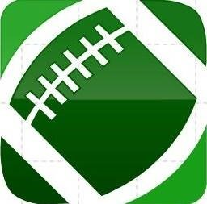

|  |
BEARCAT FOOTBALL TICKETS |
|
Bearcat Arena is a 2,500 seat multi-purpose arena in Maryville, Missouri. It was built in 1959 and renovated in 1993. It is the home of the Northwest Missouri State University basketball and volleyball teams. The Arena is in Lamkin Activity Center, a part of the Ryland Milner Complex and is sandwiched between Bearcat Stadium on the west and the Martindale Gymnasium and the Robert P. Foster Aquatic Center on the east. The Arena was originally called Lamkin Gymnasium (popularly called "Lamkin Gym") and was named for former school president Uel W. Lamkin. The original school gymnasium opened in 1926 as Martindale Gymnasium (named for Nell Martindale Kuchs an early women athletics faculty member). Martindale was used for women's sports and Lamkin for men's sports. The two structures were connected by a tunnel going to the pool in the lower level of Martindale. In 1981 the Foster Aquatic Center replaced the pool. |